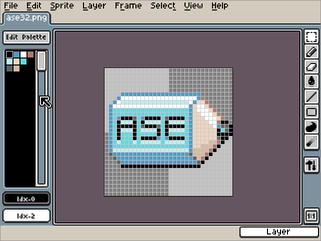

ASEPRITE
Dieser Artikel wurde für die folgenden Ubuntu-Versionen getestet:
Ubuntu 14.04 Trusty Tahr
Zum Verständnis dieses Artikels sind folgende Seiten hilfreich:
Aseprite  (ehemals Allegro Sprite Editor) ist ein freies Bildbearbeitungsprogramm, das schwerpunktmäßig für das Erstellen und Bearbeiten von Sprites und Pixel-Art entwickelt wird. Solche Grafiken sind mitunter aus alten Point-and-Click-Adventures und Action-Rollenspielen bekannt. Sie werden auch heute noch in aktuellen Adaptionen dieses Genres wie z.B. POWDER oder bei Spielen wie OpenTTD und Battle For Wesnoth zur Spiele-Entwicklung eingesetzt.
(ehemals Allegro Sprite Editor) ist ein freies Bildbearbeitungsprogramm, das schwerpunktmäßig für das Erstellen und Bearbeiten von Sprites und Pixel-Art entwickelt wird. Solche Grafiken sind mitunter aus alten Point-and-Click-Adventures und Action-Rollenspielen bekannt. Sie werden auch heute noch in aktuellen Adaptionen dieses Genres wie z.B. POWDER oder bei Spielen wie OpenTTD und Battle For Wesnoth zur Spiele-Entwicklung eingesetzt.
Das Programm schließt mit seiner pixeligen Oberfläche an das Aussehen alter Bildbearbeitungsprogramme wie Deluxe Paint an, die zu ihrer Zeit verbreitet für das Erstellen von Spielegrafiken eingesetzt wurden. Optisch sollte das allerdings nicht darüber hinwegtäuschen, dass Aseprite eine aktuelle und aktiv entwickelte Software ist, die eine umfangreiche Werkzeugpalette, Ebenen und 2D-Animationen bereitstellt.
Derzeit ist Aseprite ebenso wie die noch recht spärliche Dokumentation lediglich in englischer Sprache verfügbar. Seit Version 1.0.0 wird ein kostenpflichtiger Download auf der Projektseite für die vorkompilierte Windows- und MacOS-Version angeboten. Das Programm ist aber weiterhin freie und quelloffene Software - siehe auch Aseprite FAQ.

Installation¶
Seit Ubuntu 13.04 kann das Programm aus den offiziellen Paketquellen installiert werden.[1]
aseprite (universe)
 mit apturl
mit apturl
Paketliste zum Kopieren:
sudo apt-get install aseprite
sudo aptitude install aseprite
Konfiguration¶
Beim ersten Start legt das Programm die Datei ~/.asepriterc mit der Standardkonfiguration im Homeverzeichnis an. Die Einstellungen, die man in der grafischen Oberfläche vornimmt, werden dort beim Verlassen des Programms gespeichert. Ebenso kann man diese Datei auch mit einem Texteditor bearbeiten (einige Einstellungen können derzeit ausschließlich über diese Konfigurationsdatei vorgenommen werden). Beim nächsten Programmstart werden diese Einstellungen übernommen.
Die Tastenkürzel und Menüs sind in der Datei data/gui.xml definiert und können ebenfalls problemlos mit einem Texteditor geändert werden.
Das Standardthema für das Aussehen der Oberfläche liegt in data/skins/default/* und kann auch angepasst werden.
In der Menüleiste ist eine Schnellübersicht unter "Help → Quick Reference" eingetragen. Das Programm sucht dafür nach der Datei docs/quickref.pdf, die aber im Quelltext nur als docs/quickref.odt vorliegt. Entweder muss man diese Datei mit LibreOffice als PDF exportieren oder die Schnellübersicht direkt als PDF von der Projektseite herunterladen und an die passende Stelle kopieren.
Experten-Info:
Wer das Programm unbedingt in deutscher Sprache haben möchte, kann die Beschriftungen der Oberflächenelemente in den XML-Definitionen (data/widgets/*.xml) ändern. Die Schnellreferenz dann bitte auch übersetzen, das Ganze an diesen Artikel anhängen sowie dem Entwickler zukommen lassen.
Bedienung¶
Im Prinzip entspricht Aseprite anderen Bildbearbeitungsprogrammen und verfügt über ähnliche Dialoge und Werkzeuge, deren Einstellungen individuell angepasst werden können. In der Werkzeugleiste verbergen sich hinter den meisten Symbolen weitere Werkzeuge, die über einen einfachen Linksklick  auf das Symbol in einem Menü sichtbar und auswählbar werden.
auf das Symbol in einem Menü sichtbar und auswählbar werden.
Ebenen werden unterstützt, allerdings werden in der Statusleiste lediglich mit Buchstaben gekennzeichnete Schaltflächen angezeigt, um die Ebenen auszuwählen. Möchte man eine Ebene ausblenden, für die Bearbeitung sperren oder in der Hierarchie neu anordnen, kann man das im Animations-Editor machen, in dem auch die tatsächlichen Namen der Ebenen angezeigt werden. Der Dialog des Animation-Editors dient also gleichzeitig zum Verwalten von Bildsequenzen und Ebenen.
Ungewöhnlich für ein Bildbearbeitungsprogramm ist die Möglichkeit, das Bearbeitungsfenster horizontal und vertikal zu teilen (auch mehrfach), was eher für die Ansichten in 3D-Programmen bekannt ist. Damit kann man Bilddateien gleichzeitig in verschiedenen Größen bearbeiten, bei hoher Zoomstufe verschiedene Bildbereiche für Farbauswahl oder Vorlage verwenden, oder zwei unterschiedliche Bilddateien neben-/übereinander anzeigen lassen.
Farbpaletten¶
Aseprite verwendet für Farbpaletten leider nicht das gleiche textbasierte Format, das von GIMP, Inkscape oder Krita eingesetzt wird. Stattdessen kommt das binäre IFF-Color-Map-Format zum Einsatz, das im Prinzip auch innerhalb von GIF-Bilder zur Definition der indizierten Farbpalette benutzt wird. Damit lassen sich benutzerdefinierte Farbpaletten leider nicht in einem einfachen Textformat erstellen und einbinden. Allerdings generiert das Programm beim Öffnen eines vorhandenen Bildes automatisch eine passende Farbpalette, die sich als Datei mit der Endung .COL speichern lässt.
Zum Erzeugen einer benutzerdefinierten Farbpalette z.B. aus einer GIMP-Palette kann man ein Bildschirmfoto des Farbpaletteneditors in GIMP machen, dieses Bildschirmfoto in Aseprite öffnen und die generierte Palette wieder speichern.
Problembehandlung¶
Das Programm verwendet einen internen Scaler, der die Auflösung innerhalb des Programms künstlich reduziert. Dadurch wird ein Pixel größer dargestellt als es eigentlich ist. Das soll einerseits dem angestrebten Aussehen der Programmoberfläche zuträglich sein und ermöglicht darüber hinaus die meist sehr kleinen Sprites unabhängig von der Zoomstufe für die Bearbeitung größer darzustellen. Standardmäßig ist für diesen Scaler ein Wert von "2" gesetzt - sprich ein Pixel wird als 4 dargestellt (horizontal wie vertikal: doppelte Größe).
Diese Funktion ist nicht zwingend notwendig und führt zu einer unverhältnismäßig hohen CPU-Auslastung des XServers sowie Verzögerungen der Programmoberfläche. In Kombination mit 3D-Beschleunigung des Desktops, insbesondere Compiz, sogar bis zur Unbenutzbarkeit des Programms.
Um diesen Scaler zu deaktivieren, muss man in der Konfigurationsdatei ~./asepriterc den Eintrag:
ScreenScale = 2
ändern in:
ScreenScale = 1
- Erstellt mit Inyoka
-
 2004 – 2017 ubuntuusers.de • Einige Rechte vorbehalten
2004 – 2017 ubuntuusers.de • Einige Rechte vorbehalten
Lizenz • Kontakt • Datenschutz • Impressum • Serverstatus -
Serverhousing gespendet von